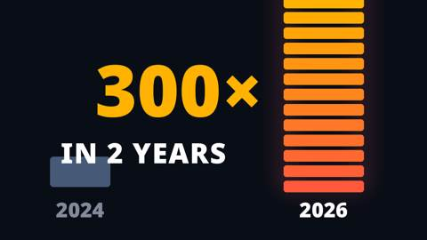
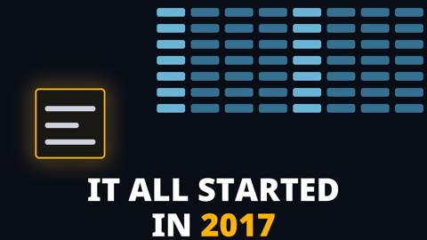
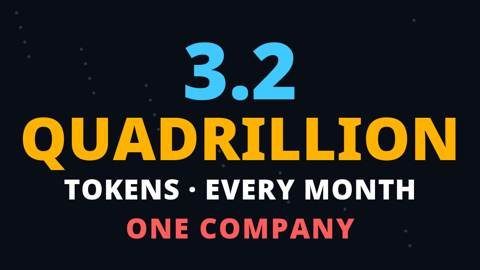
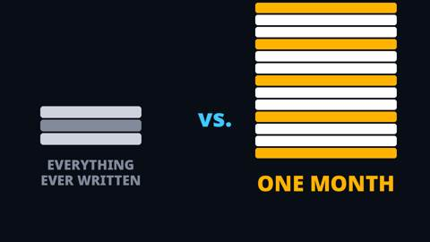
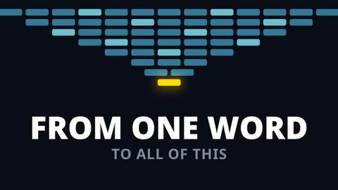
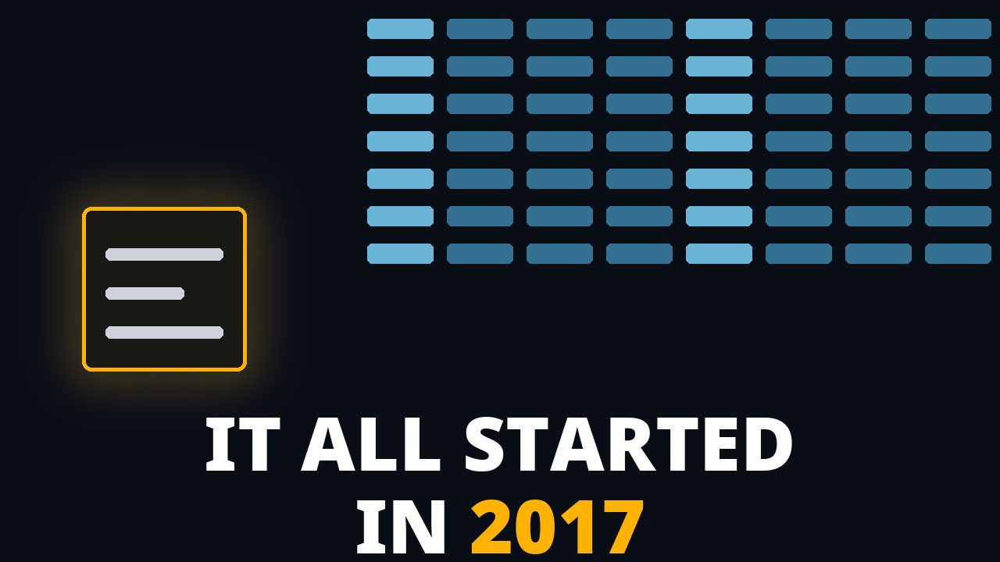
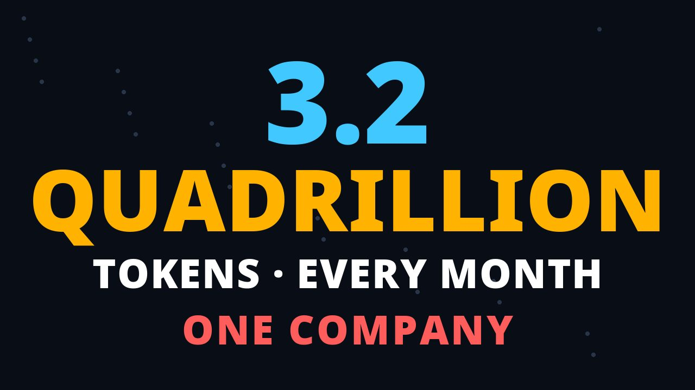
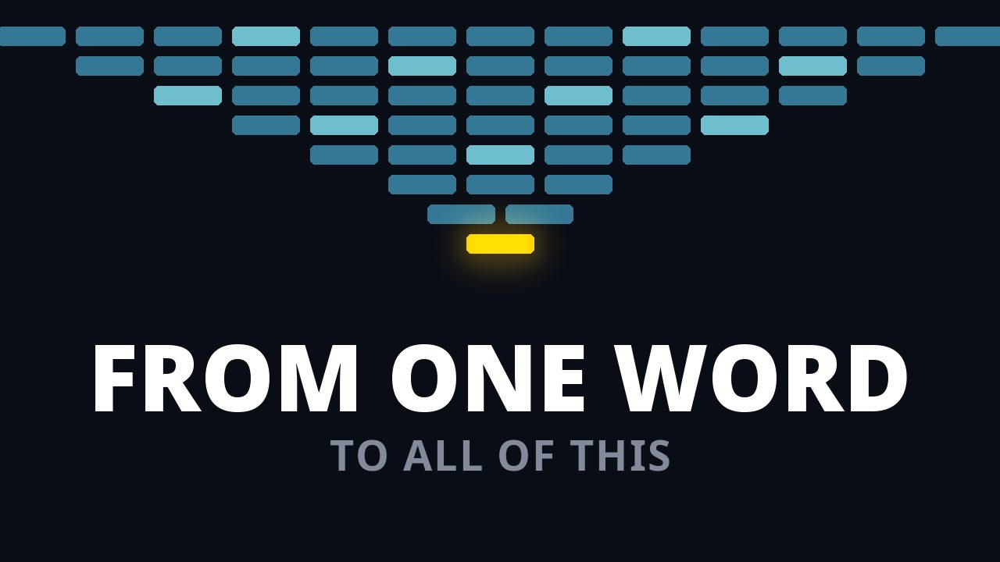
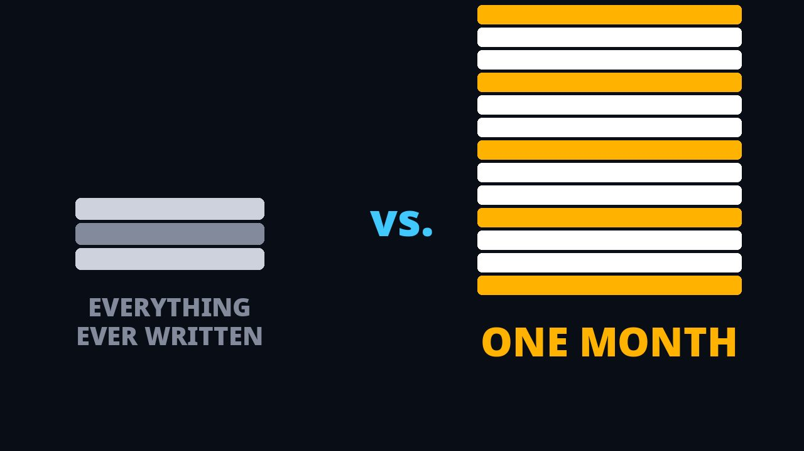

52 items · 30 passing · stage gates 28 / 33 · Tab 0 = 85%
Tap a tile — or hold it. = it needs you.
“Show language processing grown to industry scale from one 2017 idea — the road from predicting words to agents doing jobs.”
20 words (recounted) · scope: THE WHOLE VIDEO. The correction, in the open:
The misalignment you named. The transcript talks about the numbers, the growth, the civilization-scale industry of language, the paper, prediction becoming a model of language, and the road this series teaches — from predicting the next word to agentic systems doing the job. Ownership appears nowhere in it. Two earlier objectives imported it anyway: the original ("…builds and owns their layer in it") and the five-pass doorway version ("Show language grown vast from one 2017 idea — then ask who owns its layer, so the viewer builds theirs"). The passes found the weld — the ownership clause carried by zero lines — and argued around it instead of obeying it. That is recorded here as the failure, not smoothed over.
The re-derivation. From the transcript's own inventory, nothing else: scale (P1–P7) · era and industry (P8–P9) · the 2017 idea (P10–P15) · the road the series teaches (P16–P17). Every clause of the objective above is carried by named lines; the alignment section (8) checks exactly this, mechanically, and it FAILS both superseded objectives on this item — the check working as intended.
Where ownership lives. It is the objective of "Who Owns Your Harness?" (soa-01) and of the harness line — a different video's job. This piece's close is its own: the series promise. The grafted ownership lines were removed from the fitted arrangement (section 5); their text stays in variant V-1, their home.
The hook objective (separate, narrower — first 5 seconds only), corrected with the rest: “Land the number in five seconds: 3.2 quadrillion tokens a month, Google alone — a scale no intuition can hold.” Tension T-1 is DISSOLVED: it existed only because the old hook objective imported the ownership question; the hook's own lines carry no such question.
Or write what to change in a comment box above.
And: machines now process language at a monthly scale no one can picture. But: the scale defeats intuition — one month outweighs everything humanity ever wrote, and even saying it twice barely lands it. Therefore: trace it to the one idea it grew from, and follow the road that idea opens — from predicting words to agents doing jobs.
· The macro tension is the prose's OWN: its first movement exists to fight the unfeelability of its number — that is why the comparison and the deliberate repeat are in it. The resolution is also its own: an origin small enough to hold (one paper, one idea) and a road concrete enough to follow. The genesis keeps its nested mini-ABT (the holy grail against the breakthrough), unchanged — it was always the prose's. The ownership But from the fit iteration is REMOVED with its graft: it belonged to the superseded objective, and keeping it would rebuild the same contradiction (alignment section, item 1).
· Alternatives stand rejected with their reasons, including — now formally — the ownership-But form: rejected because its But has no lines in this transcript.
AND-1 · The Number: the figure (3.2 quadrillion a month, Google alone) → the growth (300× in two years) → the comparison (all written text ≈ a tenth of one month), said twice so it lands.
AND-2 · The Uses: what this processing IS — searches answered in writing, voices turned to text, long documents summed up. The number becomes the viewer's own week.
AND-3 · The Era: the stakes — this could be the era that multiplies cognitive power as industrialization multiplied physical power.
AND-4 · The Origin (nested mini-ABT): the hinge question → a paper in 2017 → the holy grail it broke → predict the next word; a team builds around attention; the Transformer is born.
THEREFORE · The Road: predicting the next word leads to agentic systems doing a job; the technology matured over nearly a decade; the series teaches that road — learn how it matured, and build an intuitive understanding of how to use it.
Runtime class: the original's own (its published film ran 84.5 s). Fitted total: 221 words ≈ 79 s at the prose's published pace (2.80 words/s) to ~91 s at the canonical build's pace (2.43).
Number: 5–6 sentences · 45–60 words. Uses: 2 sentences · 14–22 words. Era: 1 sentence · 15–22 words. Origin: 6 sentences · 85–100 words. Road: 2 sentences · 30–40 words.
Or write what to change in a comment box above.
Five pairs, built as single units — each thumbnail opens a thought its title completes. They are RANKED by my prediction, with reasons, and three are selected to publish (YouTube's test compares up to three, judged on watch time). The other two are reserves, not waste: one is the alternate for its promise, and one may belong to a different video entirely. Every pair sits below my 90 bar today (scores in section 4) — they iterate from your scores.
Pair B — rank 1 · PUBLISH · Google Processes More Than Everything Ever Written

Thumbnail: "300× · IN 2 YEARS · 2024 / 2026", the column bursting off the frame. The thought the viewer cannot finish: "300× in two years — WHAT grew?" The title names the subject and adds the comparison. Why rank 1: the most concrete promise (dated, numbered, physical), and its payoff is the video's second beat — early payoffs are what a watch-time test rewards.
Pair A — rank 2 · PUBLISH · 3.2 Quadrillion Tokens a Month — Google Alone

Thumbnail: "IT ALL STARTED IN 2017", one small page under a wall of text. The thought the viewer cannot finish: "It all started in 2017 — started WHAT?" The strongest open loop of the five (an unfinished sentence beats a stated fact). Rank 2, not 1: its payoff waits for the origin movement, mid-video.
Pair C — rank 3 · PUBLISH · One Month vs. Everything Humanity Ever Wrote

Thumbnail: the figure itself — "3.2 QUADRILLION / TOKENS · EVERY MONTH / ONE COMPANY". The thought the viewer cannot finish: "3.2 quadrillion a month, one company — how, and compared to what?" The title supplies the human yardstick. Rank 3: its itch is disbelief, weaker than an open question — but its payoff is the first movement, paid twice.
Pair E — rank 4 · RESERVE · One Month of Google vs. Everything Ever Written

Thumbnail: the comparison staged — a small stack labeled EVERYTHING EVER WRITTEN against a tower labeled ONE MONTH. The thought the viewer cannot finish: "One month outweighs all of it — whose month, and by how much, really?" Rank 4: the same promise as Pair C in a different execution — which makes it C's alternate, not a fourth test slot (a test reads different promises better).
Pair D — rank 5 · RESERVE · Predicting the Next Word Became Agents Doing Jobs

Thumbnail: "FROM ONE WORD — TO ALL OF THIS", a single glowing bar widening into a flood. The thought the viewer cannot finish: "From one word — to all of WHAT?" Rank 5 for THIS video: its payoff is the final movement, the latest of the five, and the image is the most abstract. Recorded migration note: this pair leads with the road — it may fit the series' maturation video better than this one.
· Publish 3: B, A, C — three different promises (growth · origin · scale), which is what a watch-time comparison can actually read. · On the long-form, YouTube's Test & Compare runs the three and reports watch-time share; the winner becomes the standing packaging and the result is recorded back into this file. · In the Shorts feed there is no chosen thumbnail — the first seconds do this work — so there the verification is retention: does the opening hold past the promise the pair made (the figure in 5 s, the growth by beat two)? · Reserves: E swaps in if C's execution underperforms its promise; D is held for the maturation video unless you direct otherwise. · Every later change to a pair is a recorded revision here, never a silent swap.
Your publish set: 0 of 3 chosen.
Tap “Use pair … in my 3” under each pair you want. Tap again to take it out.
Your verdict on the earlier sets — zero — is recorded at the top of this file. What was missing, in your words: curiosity. A bare year with arrows means nothing; an image earns the click when it starts a thought the viewer cannot finish — an unfinished phrase, an unexplained explosion, a number too big to believe. These five are built on exactly those mechanics, with a fuller color palette (cyan, amber, coral, teal on a deep navy field). Pairs D and E join the first three in this round — the set of five, ranked as pairs in section 3. Contrast computed from the design colors: white 19.43 · amber 10.83 · cyan 10.11 · coral 6.42 (coral is the floor — still clear for large display text). Each viewed at full size and at a 10% downscale before entering this file; two drawing defects (an overflowing headline, a colliding label) were caught in that viewing and fixed before this delivery.
A · The unfinished phrase (pairs title A)

Text: "IT ALL STARTED IN 2017" — your example, used because it is the best carrier: the sentence starts a story and stops. Started WHAT? One small glowing page sits under a wall of text that fills the sky — the disproportion is visible, the cause is not named. The title carries the answer's scale.
The thought the viewer cannot finish: “It all started in 2017 — started WHAT?”
My engagement score: 34/40 = 85/100 — below the 90 bar; still iterating. Curiosity gap 9 · legibility 9 · pull 8 · promise clarity 8. Gaps to 90: the scene is quiet at feed speed (pull), and the phrase needs its title to land (clarity). Your score is the verdict.
B · The unexplained explosion (pairs title B)
Text: "300× · IN 2 YEARS · 2024 / 2026" — your example: the years and the multiple, with the two bars making the growth physical (the 2026 column bursts off the top of the frame). The image never says WHAT grew; the title names it. A growth with no subject is a question.
The thought the viewer cannot finish: “300× in two years — WHAT grew?”
My engagement score: 35/40 = 87/100 — below the 90 bar; still iterating. Curiosity gap 8 · legibility 10 · pull 9 · promise clarity 8. The strongest of the three on pull. Gap to 90: the subject is withheld by design, so the gap caps until the title lands. Your score is the verdict.
C · The unbelievable number (pairs title C)

Text: the figure itself, staged as the wonder — "3.2 QUADRILLION / TOKENS · EVERY MONTH / ONE COMPANY". A number this size reads as a claim the viewer wants checked; the title adds the human comparison (everything ever written) that makes it mean something.
The thought the viewer cannot finish: “3.2 quadrillion a month, from ONE company — how, and compared to what?”
My engagement score: 34/40 = 85/100 — below the 90 bar; still iterating. Curiosity gap 7 · legibility 10 · pull 8 · promise clarity 9. The clearest promise. Gap to 90: disbelief is a weaker itch than an open question. Your score is the verdict.
D · The road, widening (pairs title D · reserve)

The thought the viewer cannot finish: “From one word — to all of WHAT?”
My engagement score: 32/40 = 80/100 — below the 90 bar; still iterating. Curiosity gap 8 · legibility 9 · pull 8 · promise clarity 7. Gaps to 90: the most abstract image of the five, and its payoff is the video's last movement. Recorded as the reserve with a migration note (section 3): it may belong to the maturation video.
E · The comparison, staged with labels (pairs title E · reserve)

The thought the viewer cannot finish: “One month outweighs all of it — whose month, and by how much, really?”
My engagement score: 34/40 = 85/100 — below the 90 bar; still iterating. Curiosity gap 6 · legibility 10 · pull 8 · promise clarity 10. Gap to 90: the weakest open loop of the five — the image nearly closes its own story; its itch is disbelief. It is Pair C's alternate: same promise, different execution.
Seed (corrected 2026-10-29, on your identification): the ORIGINAL opening prose — WO-A, explainer packet variant "opening-hook-59", your text verbatim, 17 lines, 237 words. Source of record: the migration tree's source script, whose preservation rule is: narration verbatim, segmented at sentence boundaries — nothing rewritten, added, or cut. Status: DRAFT ZERO — the transcript stage selects and compresses from it; it does not start from a compression. Every line is editable here.
P1 (7 words)
P2 (5 words)
Total 12 — FITS.
P3 (11 words)
P4 (19 words)
P5 (8 words)
P6 (5 words)
P7 (17 words)
Total 60 — OVER the Short capacity by 30. The block carries the original's deliberate repeat (P6–P7): the ratio, said twice so it lands. A decided feature of the original, not an accident.
P8 (14 words)
P9 (19 words)
ORDER DIFFERENCE, recorded: the prose states the era BEFORE explaining its origin (the origin then answers "what set this in motion?"). The architecture (section 2) places the stakes function after the genesis. Part of your architecture judgment.
P10 (19 words)
P11 (17 words)
P12 (15 words)
P13 (11 words)
P14 (18 words)
P15 (15 words)
Total 95 — OVER the Short capacity by 40. The original's genesis is FULL: the paper, the holy grail, prediction, the team, attention, the Transformer. (The "empty genesis containers" in the earlier Tab 0 were the consolidation's cuts, not the original's gaps.) The prose's mini-But is implicit — the holy grail is the decades-long difficulty; there is no wall-of-rules line.
EMPTY in the original. The prose has no ownership beat — no layer, no "who owns it". That turn exists only in the variants below (the consolidation invented it). Whether the Short builds the But as new writing at the transcript stage is part of your architecture judgment.
P16 (18 words)
P17 (19 words)
Total 37 — OVER by 13. The original's close is a series promise: prediction leads to agentic systems doing a job; the technology matured over nearly a decade; build an intuitive understanding of how to use it. The Academy build-your-own-harness ending is NOT in the original — it lives in the variants.
V-1 · The 2026-10-28 consolidation (14 lines, 145 words). A deliberate rewrite against retention evidence: rate-first hook ("One billion tokens, every second"), the comparison cut to once, the origin compressed to two lines, the series close replaced by the ownership question, the workshop promise, and the Academy ending ("Follow Hadosh Academy — and build your own harness"). Full text: the frozen tree's transcript record.
V-2 · The 2026-10-29 v4 restructure (13 lines, 137 words). V-1 re-ordered under your hook decision (figure first, the rate line removed): the figure, the growth, the comparison once, the lifetime line, the framing question, the paper, the mechanism, the analogy, the model as electricity, the layer, the ownership question, the workshop promise, the Academy ending. This was the seed in Tab 0 v7 — the wrong seed, corrected here.
How draft zero and the architecture were fitted (fit iteration, then the ALIGNMENT CORRECTION of 2026-10-29 18:50 ET). Survival: 204 of the prose's 237 words reach the fitted piece (86%). Dropped, with reasons: P4 (19 w — its archive setup is restated tighter by P5 + P7), P8 (14 w — an era restatement; P9 carries era + stakes in one line). Added: the uses beat (2 lines, NEW — your directed addition, derived in the 17:59 derivation table). Removed in the alignment correction: the ownership graft (G1–G5, 57 w) — it served the superseded objective, not this transcript; its text lives in variant V-1. P17 now stands in full, as written. Order follows the corrected architecture (section 2).
AND-1 · The Number (53 w): P1 · P2 · P3 · P5 · P6 · P7 — figure, growth, the comparison said twice.
AND-2 · The Uses (17 w, NEW): U1 "Every search comes back as a written answer." (8) · U2 "Every voice becomes text; every long document, a summary." (9)
AND-3 · The Era (19 w): P9 — the stakes analogy.
AND-4 · The Origin (95 w): P10 · P11 · P12 · P13 · P14 · P15 — hinge, grail, prediction, team, attention, Transformer.
THEREFORE · The Road (37 w): P16 (18) · P17 (19, in full) — prediction leads to agentic systems doing a job; the series teaches how it matured and how to use it.
Fitted total: 221 words ≈ 79 s at the prose's own published pace (2.80 words/s) to ~91 s at the canonical build's pace (2.43). The transcript tab finalizes wording; this arrangement is Tab 0's fitted proposal, not the locked transcript.
Draft zero alone: 237 words ≈ 98 s at the measured Short pace; its own published film ran 84.5 s. D-1 (open) YOUR CALL carries Tab 0's recommendation, strengthened by the alignment correction: with the graft gone, the fitted piece runs 221 words ≈ 79–91 s — the original's own runtime class, nearly exact. Recommendation: accept this class; deeper cuts would have to come out of the genesis or the repeat, the two places the earlier compression cut and was judged for it. Recorded openly; nothing pre-cut.
My recommendation is inside section 5: accept the longer class. The 65 second envelope was a leftover from the compression draft.
F1 · 3.2 quadrillion tokens a month, Google. Sundar Pichai, Google I/O 2026, as carried in the Academy's content packet. Single source: the company's CEO, on stage. The piece states it as Google's figure ("Google alone") — the honest frame.
F2 · Trajectory 9.7 trillion/month (2024) → 480 trillion (2025) → 3.2 quadrillion (2026). Same source family. Arithmetic recomputed: 3.2×10^15 ÷ 9.7×10^12 ≈ 330 — "more than three hundred times in two years" holds.
F3 · All usable public text ≈ 300 trillion tokens. Epoch AI estimate, 2024. Arithmetic recomputed: 300×10^12 ÷ 3.2×10^15 ≈ 0.094 — "about a tenth of one month" holds.
F4 · "Attention Is All You Need," 2017, Vaswani et al. The Transformer paper. Bibliographic fact.
F5 · "More language than a lifetime of reading." A rhetorical comparison, checked directionally: an extreme reading lifetime (≈250 words/minute, 16 hours a day, 80 years ≈ 7×10^9 words) sits ~460,000× below one month. Conservative; safe. (Corrected in pass 9 — the baseline's figure was wrong; the true arithmetic makes the line more conservative, not less.)
F6 · "The model is the electricity." The piece's chosen metaphor (the canon utility term), not a factual claim; its fairness clause ("the same for everyone") states the model's general availability.
AND-0: language processing runs at 3.2 quadrillion tokens a month — one company. (P1, P2)
AND-1: it grew more than 300 times in two years (P3); all usable public text ever written ≈ 300 trillion tokens (P4) — about a tenth of one month (P5), said twice so it lands (P6, P7).
Era / stakes: civilization, with its machines, now processes language at this scale (P8); this could be the era that multiplies cognitive power as industrialization multiplied physical power (P9).
AND-2: what set it in motion was a paper from 2017 (P10); understanding and translating language had long been the field's holy grail (P11); predicting the next word offered a way to learn language's patterns (P12); a team at Google built a new architecture around attention (P13); attention means learning which earlier words matter (P14); the Transformer learns from vast collections of text (P15).
AND-3: predicting the next word leads to agentic systems doing a job (P16); the technology matured over nearly a decade (P17).
AND-2 (fitted): what this processing IS in the viewer's own week — searches answered in writing, voices turned to text, long documents summed up. (U1, U2 — new lines, derived.)
THEREFORE · The Road: predicting the next word leads to agentic systems doing a job, and this series teaches that road — how the technology matured over nearly a decade, and how to use it. (P16, P17 — both present in draft zero, in full.)
Ownership is NOT this video's learning. An earlier map carried it as a gap and the fit filled it with a graft; the alignment correction removed both the gap and the graft. Ownership is taught by "Who Owns Your Harness?" — this piece's pair in the harness lane. This video's learnings are the scale, the uses, the era, the origin, and the road — each with its lines, checked in the alignment section.
Why this family exists: the earlier checklists verified each element on its own (form, counts, evidence) — and an objective could pass its own checklist while contradicting the transcript, because no item CHECKED one element against another. These items do only that. Each passes only when the mapping between the two elements is shown in this file; a changed element re-runs its items. Proof the family works: item 1 FAILS both superseded objectives (their ownership clauses map to zero transcript lines) — recorded in section 1.
This tab was built by the documented method (branches/AGENTS.md): a baseline assembled from the record, then numbered passes, each a named audit, with every correction made in the open and logged. The full log — every finding, every corrected number — lives in this file's metadata layer (view source). Summary:
Pass 0 — baseline assembled; counts and reasoning recorded unchecked.
Pass 1 — objective reasoning traced to the record; the two-jobs resolution added; tension T-1 flagged openly.
Pass 2 — architecture claims re-checked against their sources; the container rule, run as a failure test, exposes the genesis gaps on its own.
Pass 3 — capacity math restated on the measured pace; budgets carry the fills' added gap time; D-1 restated (~74–76 s vs ~65 s top).
Pass 4 — title counts verified; T2's wording defect fixed ("Became" closed the era; now "Is an Industry Now").
Pass 5 — thumbnail specs tightened (text counts, frame gap, ray count); design colors fixed for computed contrast.
Pass 6 — full recount of every transcript line: six baseline counts corrected (the seed's own 137 total matched the record exactly).
Pass 7 — overflow and budget restated on corrected figures (three containers over their tops; nothing cut to fit).
Pass 8 — viewer-learning checked line by line; the hinge learning and the load-bearing note added.
Pass 9 — fact arithmetic recomputed; F5's lifetime figure corrected (the line is more conservative than the baseline claimed).
Pass 10 — cross-alignment traced promise to objective; checklist states recomputed from the evidence; dashboard checked against the standard.
Five pairs + dashboard round — on your direction (19:06 ET): the packaging set grew to five ranked pairs with a publish-3, reserves, and a later-verification plan (section 3); the dashboard took its next iteration (legibility font embedded, Listen buttons, self-score 89 with the density gap named). Tab 0 completeness assessed from the file's own state — the accounting is in the metadata layer.
Alignment correction — on your finding (18:50 ET): the objective imported ownership the transcript never mentions. Executed in full: objective re-derived from the transcript alone; the graft removed from the fitted arrangement (221 words; P17 restored in full); the architecture's But re-anchored to the prose's own tension; the hook objective corrected (T-1 dissolved); the learning map corrected; and a new ALIGNMENT family (section 8) now checks every pair of elements for contradiction, mechanically. Dashboard styling iterated again toward your 90 bar.
Objective passes + packaging rebuild + dashboard redesign — on your direction (18:37 ET): five passes on the objective (the weld found; doorway objective recommended); titles and thumbnails withdrawn and rebuilt on your curiosity mechanics, your score of 0 carried on the new scoreboard; the dashboard redesigned for dyslexia (color coding, your-call tags, bigger type and spacing). Entries in the metadata layer.
Fit iteration — on your direction (18:19 ET): the transcript (~80% stable) and the architecture fitted to each other. Fit audit ran; architecture revised (deep And, stakes in the prose's position, the But grafted from V-1); fitted arrangement built (268 words; 82% of the prose survives; drops and additions each derived); objective re-checked and kept; titles and thumbnails re-derived from a 32-source craft study and rebuilt — viewed at full and 10% size, contrast computed. Full entries in the metadata layer.
Seed correction — on your identification (18:09 ET): draft zero was the v4 compression, not the original opening — my unapproved seed choice, carried in from an unanswered clarification. Replaced with the original prose (17 lines, 237 words, verbatim), everything re-mapped; the difference measured (42% shorter by words; ~59% of the original absent; ~46% new writing). Full entry in the metadata layer.
Build verification — thumbnails drawn and viewed at full and 10% size; B failed its depicts test on first render and was redesigned before delivery; contrast computed (white 19.63 · amber 10.94).
Nothing built yet. The finished video plays on this tab.